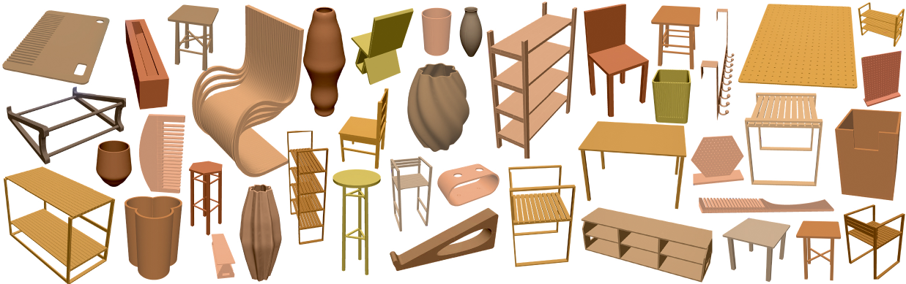

Benchmarking Manufacturable, Functional, and Assemblable Text-to-CAD Generation
A Text-to-CAD benchmark for complex, editable B-Rep assemblies. Pairs practical design instances with structured Design Specifications and evaluates LLM outputs through a three-stage funnel: code check → geometric check → design-intent alignment.

Figure 1. A subset of design instances from the MUSE dataset — practical, multi-component CAD assemblies that must satisfy real engineering constraints, not just look like the reference shape.
Large language models (LLMs) have recently advanced text-driven 3D generation, yet Text-to-CAD remains far from supporting industrial product design. Existing benchmarks focus primarily on generating isolated primitive CAD models and evaluate them using geometric similarity metrics that fail to capture functionality, manufacturability, and assemblability.
To address this gap, we introduce MUSE, a Text-to-CAD benchmark focused on complex, editable boundary representation (B-Rep) assemblies. MUSE pairs practical design instances with structured Design Specifications and evaluates generated models through a three-stage protocol: code check, geometric check, and design-intent alignment. The final stage uses design-specific rubrics to assess functionality, manufacturability, and assemblability, moving beyond shape matching toward practical design quality.
To enable scalable evaluation, we use a rubric-based visual language model (VLM) judge and validate its reliability through human annotation. Experiments on closed-source and open-source LLMs reveal a clear failure cascade from executable code to valid geometry and finally to engineering-ready design — even the strongest models achieve limited success on fine-grained engineering criteria. Together, MUSE provides a realistic benchmark and evaluation framework for advancing Text-to-CAD from geometric generation toward true engineering design.
Every (case, model, sample) flows through:
Below: top 5 models by Final Score. See the full table — 15+ models, 10 metrics, sortable / filterable — on the leaderboard page.
@misc{muse2026,
title = {MUSE: Benchmarking Manufacturable, Functional, and Assemblable Text-to-CAD Generation},
author = {Dong, Xiaoyu and Li, Zhi and Wu, Xiao-Ming},
year = {2026},
url = {https://dong7313.github.io/muse-benchmark/}
}